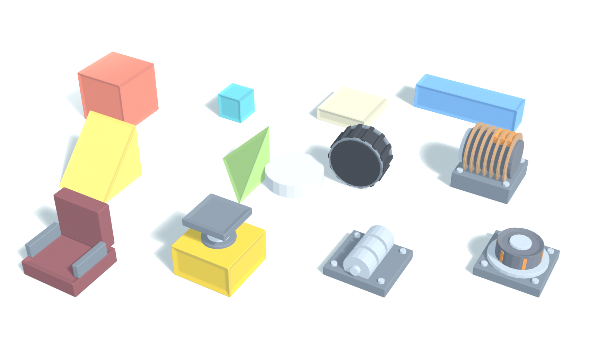
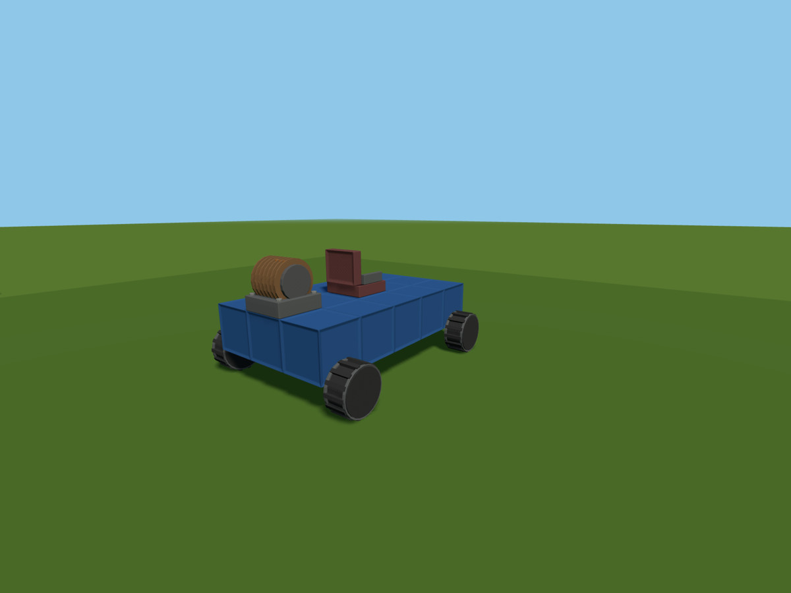
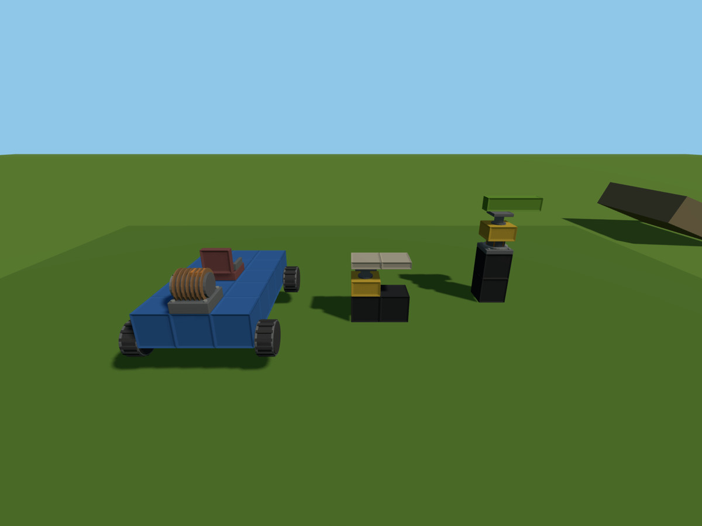
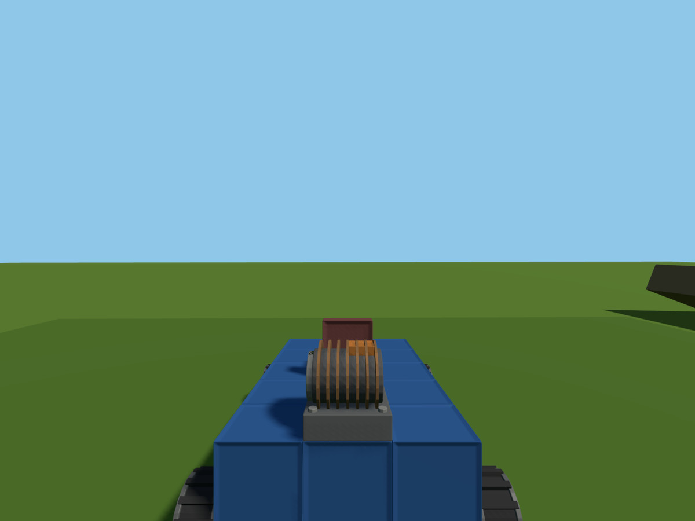

BUILD / 01
Snap it together
A precise 0.25 m grid keeps ambitious builds aligned without making them feel sterile.
Creative physics sandboxDesktop
Turn blocks, wheels, pistons, switches, and a questionable amount of torque into machines that actually work—or fail spectacularly.
Scroll to assemble · Point to inspect
Inside the yard
Start with a block. End with a buggy, a lifting platform, a mechanical arm—or something nobody thought to name yet.
A precise 0.25 m grid keeps ambitious builds aligned without making them feel sterile.
Add engines, suspended wheels, and a seat. Then find out if your steering theory survives the first ramp.
Buttons, switches, timers, and logic gates bring pistons and rotors under your control.
“That should probably hold.”
There is only one reliable way to find out.
Push it harder
Real physics / Real consequences
Weight, leverage, impact, and weak connections matter. Structures behave as solid machines until stress finds the joint you hoped nobody would notice.
Parts workshop
Chunky, readable parts are modeled for the job they do. Structural pieces take your paint; working parts keep their own rubber, steel, copper, and worn workshop materials.

Field notes
No staged render tricks. These are machines built and tested inside the game.

Start on the lift. Keep adding parts.

One yard, three very different machines.

Take the weird thing for a spin.
The honest roadmap
Gzowo Builders is actively in development. The workshop already works; a few larger doors are still being fitted.
These features are planned, not presented as finished.
The gate is open
Follow the project, inspect the build, and see what rolls out of the yard next.
View Gzowo Builders on GitHub